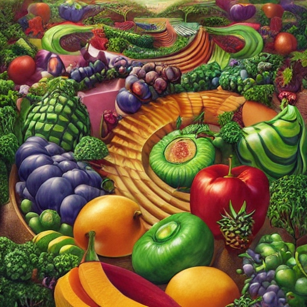

Fruit Fractal 6

A variation on the original fruit fractal recipe
Best assimilated if consumed meditatively. Best served fresh and under an open sky. The ideal meal for the gargantuan appetite.
Ingredients
- Avocados
- Guavas
- Tangerines
- Blackberries
- Raspberries
- Pineapples
- Bananas
- Concord grapes
- Cucumbers
- Tomatoes
- Kiwis
- Mangos
Steps
Note: Wash thoroughly with water and apple cider vinegar. Peel if needed/desired. Cutting/slicing/dicing are optional and random. The radius of the circle is 6 meters. The angle between the circle and the ground is either 0 degrees or 90 degrees. The latter is more challenging, but more rewarding. Move counter-clockwise. Begin at six o'clock.
- Fill the first hour (between 6 and 5) with tomatoes
- Fill the second hour (between 5 and 4) with blackberries
- Fill the third hour (etc...) with raspberries
- Fill the fourth hour with grapes
- Fill the fifth hour with tangerines
- Fill the sixth hour with kiwis
- Fill the seventh hour with mangos
- Fill the eighth hour with avocados
- Fill the ninth hour with bananas
- Fill the tenth hour with cucumbers
- Fill the eleventh hour with pineapples
- Fill the twelfth hour with guavas
- Move forward 6 meters
- Start over from step 1
Return to Home